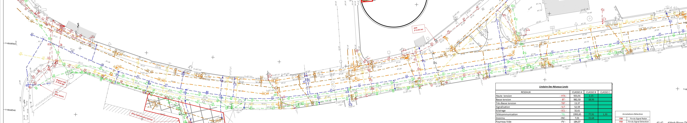

Phasage en cours
Phase 1
Zone Ouest (Secteur 1)
Carbone Réalisé (Depuis 11/03)
420 kg CO₂e
Validé
Prévision Carbone (En direct)
0 kg CO₂e
En attente du chef de chantier...
📍 Plan interactif (Rue Paul Doumer)
Touchez une zone pour le détail